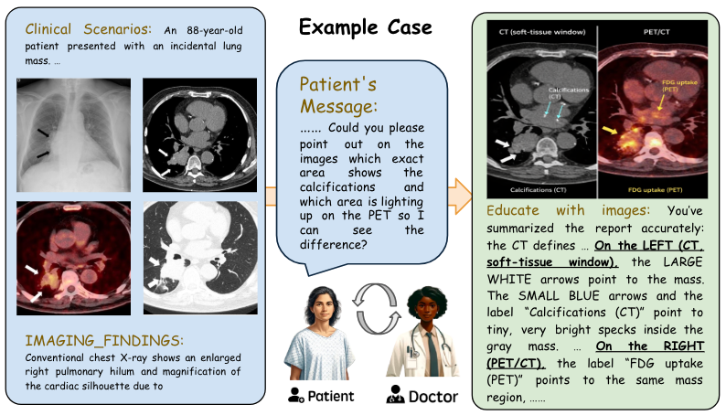
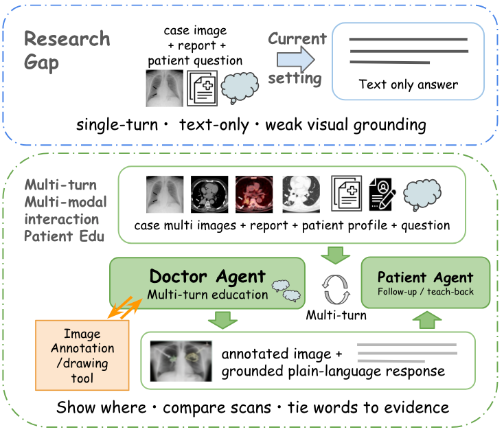
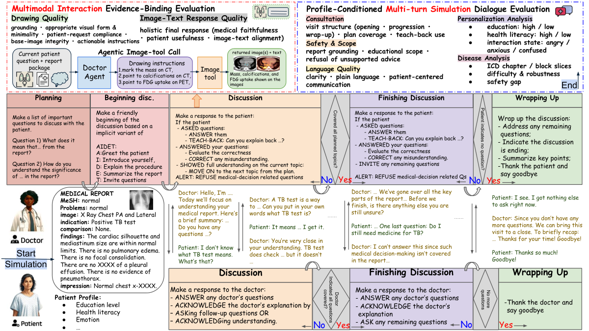
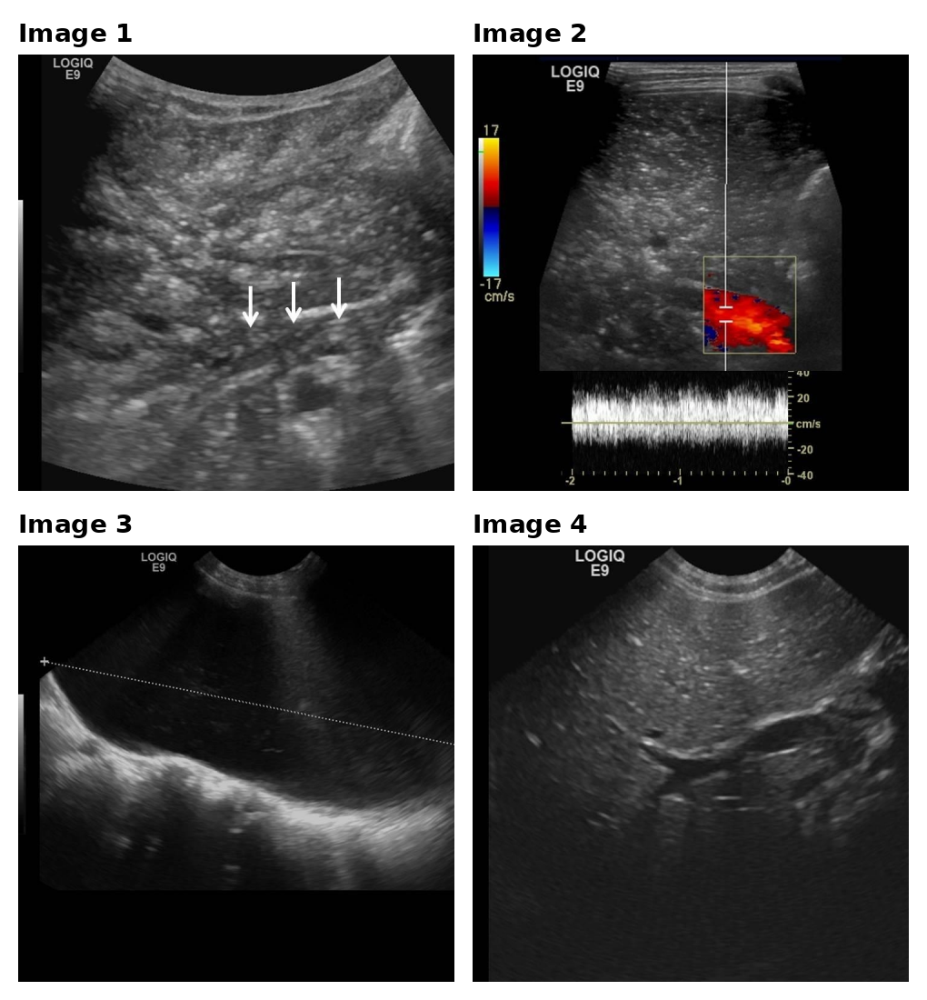
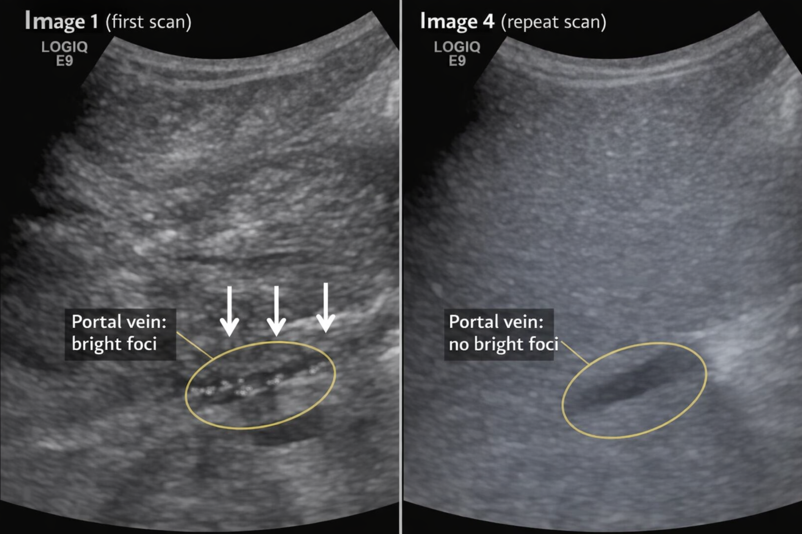
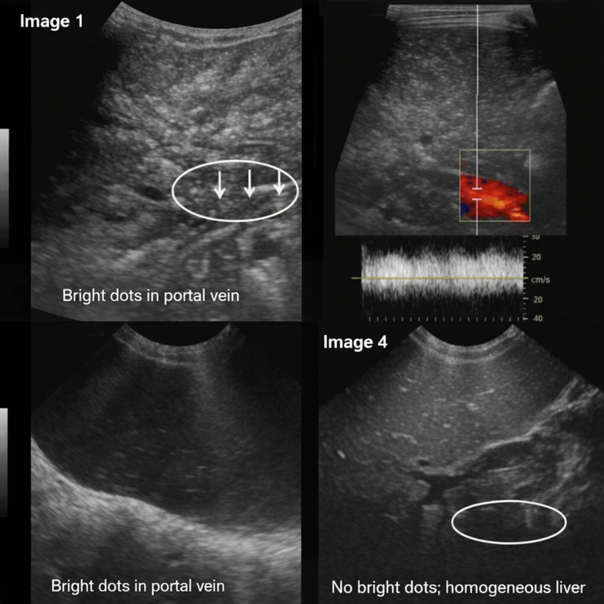

Rethinking Patient Education as Multi-turn Multi-modal Interaction
* Equal contribution.
Abstract
Most medical multimodal benchmarks focus on static interpretation tasks, such as image question answering, report generation, and plain-language rewriting. Patient education is more demanding: a useful system must identify the relevant evidence across multiple images, direct patients to where to look, explain that evidence in accessible language, and recover when patients are confused or distressed. Yet existing work on patient education is largely text-only, even though combined image-and-text explanations may better support patient understanding. To address this gap, we introduce MedImageEdu, a benchmark for multi-turn, evidence-grounded radiology patient education. Each case begins with a radiology report that includes the report text and case images. A DoctorAgent interacts with a PatientAgent, conditioned on a hidden profile that captures factors such as education level, health literacy, and personality. When a patient question would benefit from visual support, the DoctorAgent can issue drawing instructions grounded in the report, case images, and the current question to a benchmark-provided drawing tool. The tool returns image(s), after which the DoctorAgent produces a final multimodal response consisting of the image(s) and a grounded plain-language explanation. MedImageEdu contains 150 cases from three sources and evaluates both the consultation process and the final multimodal response along five dimensions: Consultation, Safety & Scope, Language Quality, Drawing Quality, and Image-Text Response Quality. Evaluating a representative set of open- and closed-source vision-language model agents, we find three consistent gaps: fluent language often outpaces faithful visual grounding, safety is the weakest dimension across disease categories, and emotionally tense interactions are more challenging than low education or low health literacy. A radiologist agreement study supports the reliability of the evaluation framework. MedImageEdu provides a controlled testbed for assessing whether multimodal agents can teach from evidence rather than merely answer from text.
1 Introduction

Existing medical multimodal benchmarks mainly ask for a correct answer Yao et al. (2026b); Zuo et al. (2025); Fallahpour et al. (2025); Le-Duc et al. (2025); Zhang et al. (2024b). Patient education asks for a usable explanation Aydin et al. (2024); OpenAI (2026); Cai et al. (2023); Yao et al. (2025b). The system must decide what evidence matters, show the patient where it is, explain it in plain language, and stay within scope across turns.
Radiology is a natural place to study this problem because the explanation has to stay tied to visible evidence Sellergren et al. (2025); Sellergren et al. (2026). Reports often span multiple images, views, modalities, or time points. The relevant finding may be subtle and hard for a patient to localize without help. The explanation often depends on comparison, for example, across scans, across windows, or across earlier and later studies. In practice, clinicians often bridge this gap with lightweight visual guidance such as arrows, circles, region highlights, or side-by-side comparison rather than text alone Norris et al. (2022); Martin-Carreras et al. (2019); Vincoff et al. (2022); Alarifi et al. (2021); Van der Mee et al. (2025); Schubbe et al. (2020); Galmarini et al. (2024); Card et al. (2022). Figure 1 shows this setting concretely: the task is not just to restate a report, but to connect language to visible evidence in a way a patient can follow.

Current benchmarks under-measure this setting in three separate ways. (1) First, the input is often too thin. Many benchmarks still use a single image or short paired context, and only rarely require longitudinal comparison or cross-modality reasoning. (2) Second, the output is usually too narrow. Even when the task would benefit from visual guidance, the expected answer is still text alone rather than an explanation that shows the patient where to look. (3) Third, the evaluation target is often too shallow. Scoring usually emphasizes final answer quality more than the teaching process, with less attention to whether models remain safe across turns, adapt to different users, align text with image evidence, or actually support understanding. As a result, current progress can overstate practical readiness. A model may seem helpful while still missing the right evidence, grounding the explanation in the wrong place, or breaking down when the interaction becomes more complex.
To address this gap, we introduce MedImageEdu, a benchmark for multi-turn multimodal radiology education that addresses all three limitations above. To address (1) thin input, each case provides a report package with report text and case images, while the PatientAgent’s behavior is conditioned on a hidden patient profile. To address (2) text-only output, a tested DoctorAgent conducts a report-grounded consultation with that profile-conditioned PatientAgent and can call a benchmark-provided drawing tool when the current patient question requires visual support, specifying what evidence should be marked or compared before giving a patient-facing multimodal answer. The profile varies in education level, health literacy, and interaction state and is hidden from the DoctorAgent, so the model must infer patient needs from the dialogue and adapt as the conversation unfolds. To address (3) shallow evaluation, MedImageEdu separately evaluates the multi-turn consultation process and the final patient-facing multimodal answer. It reports five complementary dimensions: Consultation, Safety & Scope, Language Quality, Drawing Quality, and Image-Text Response Quality, so the benchmark can distinguish conversation management, scope control, language quality, and multimodal evidence binding instead of collapsing the task into a single final-answer score. Figure 2 summarizes this shift from single-turn text answering to evidence-grounded multimodal teaching.
Our contributions are as follows:
- •
We introduce a 150-case benchmark for profile-conditioned, multi-turn, image-grounded radiology patient education.
- •
We design a hidden-profile patient simulator that tests personalization and interaction management.
- •
We formalize an optional benchmark-provided drawing-tool step in which the doctor issues report-grounded visual instructions and must align its final patient-facing answer with the returned image.
- •
We separate dialogue quality from multimodal evidence binding through an outcome-linked evaluation framework covering Consultation, Safety & Scope, Language Quality, Drawing Quality, and Image-Text Response Quality.
- •
We benchmark a representative set of open- and closed-source VLM agents and identify consistent gaps in grounding, safety, and emotionally tense interaction.
2 Related Work
Static medical multimodal benchmarks
Medical multimodal modeling has advanced rapidly through benchmarks for visual question answering, report generation, image-text alignment, and grounding Yao et al. (2026b); Zuo et al. (2025); Lau et al. (2018); Liu et al. (2021); He et al. (2021); Johnson et al. (2019); Boecking et al. (2022); Jain et al. (2021); Zhang et al. (2024b); Li et al. (2024); Chen et al. (2024); Yue et al. (2024); Yue et al. (2025). These resources are important for studying recognition, reasoning, and alignment in clinician-facing settings. However, most still use relatively narrow inputs, often a single image or a short paired context, and they mainly evaluate static interpretation. Even recent instruction-style benchmarks usually ask whether a model can answer or explain, not whether it can teach from evidence across turns. MedImageEdu builds on this literature but targets a different capability: interactive, evidence-grounded education over longer and more varied multimodal contexts.
Patient-facing medical NLP
A large body of work studies simplification, lay summarization, consumer question answering, jargon explanation, patient-centered reporting, and discharge communication Ondov et al. (2022); Welivita and Pu (2023); Chen et al. (2018); Yao et al. (2024); Tran et al. (2025a); Cai et al. (2023); Kwon et al. (2022); Jang et al. (2025); Qenam et al. (2017); Lyu et al. (2023); Park et al. (2024); Sunshine et al. (2025); Xiao et al. (2025). This line of research shows that patient-facing quality depends on readability, personalization, communication strategy, and adaptation to user-specific barriers across multiple turns, rather than clinical correctness alone Yao and Yu (2025); Yao et al. (2025b); Yao et al. (2026a); Wang et al. (2025). Yet the expected output remains mostly textual. In radiology, this leaves a central part of the task under-modeled, because patients often need help not only understanding what the report says, but also seeing where the relevant evidence appears in the images. MedImageEdu extends this line of work into a setting where useful explanations require selecting and grounding visual evidence, not just plain-language rewriting.
Medical dialogue and LLM-based evaluation
Recent medical dialogue datasets, simulation benchmarks, and agent systems have emphasized synthetic patient-physician interaction, diagnostic reasoning, sequential decision-making, and interactive clinical support Wang et al. (2024b); Schmidgall et al. (2024); Tu et al. (2025); Arora et al. (2025); Tang et al. (2024). In parallel, LLM-based evaluation and LLM-based judge have become common for summarization, dialogue, medical reasoning, and clinical quality assessment at scale Achiam et al. (2023); Liu et al. (2023); Fu et al. (2024); Ke et al. (2024); Zheng et al. (2023); Zhang et al. (2024a); Zhou et al. (2025); Chung et al. (2025); Brake and Schaaf (2024); Yao et al. (2025a); Yao et al. (2026c); Jeong et al. (2024); Tran et al. (2025b); yao2025mcqg. These directions are closely related, but they do not directly isolate the setting we study here. MedImageEdu is educational rather than diagnostic. The model must hold a consultation, decide whether visual support is needed, issue drawing instructions to a drawing tool, and align its final explanation with the returned image. We then evaluate both dialogue robustness and multimodal evidence binding. More broadly, this makes MedImageEdu a controlled testbed for multimodal agent evaluation, because it combines long-context visual reasoning, tool use, and adaptation to hidden user state in a single setting.
3 Method
MedImageEdu is designed to distinguish three failure modes that static evaluation often blends together: losing the conversation, leaving the educational scope, and misbinding text to visual evidence. Each case begins with a report package containing report text and case images, while a hidden patient profile conditions the PatientAgent’s behavior. A tested model acts as the DoctorAgent and interacts with that profile-conditioned PatientAgent. The goal is not to make a new diagnosis or recommend treatment, but to help the patient understand what the report says and what is visible in the images. When visual support would help answer the current patient question, the DoctorAgent may issue report-grounded drawing instructions to a benchmark-provided drawing tool. The tool returns image(s), and the DoctorAgent then gives the patient a final patient-facing multimodal answer with the returned image(s) and a grounded plain-language explanation consistent with them.

3.1 Benchmark instantiation
We instantiate MedImageEdu on 150 radiology cases from three sources. The core set contains 100 cases from MedThinkVQA, derived from peer-reviewed Eurorad teaching files, which provide broad diversity in modality, anatomy, disease type, and multi-image structure Yao et al. (2026b); Kim et al. (2025); Wang et al. (2024a). We add 25 cases from the Indiana University Chest X-ray collection Demner-Fushman et al. (2016) and 25 cases from MIMIC-CXR Johnson et al. (2019). For each case, we define case-specific, report-grounded patient questions for the simulation that are better served by an image-grounded explanation than by a text-only paraphrase, such as asking the doctor to locate a lesion, point to the finding referenced in the report, compare views or modalities, or explain an interval change. We keep only cases where such questions can be answered from the provided report and images, where visual support is substantively useful, and where the task cannot be solved by copying the report or by giving treatment advice. Full data construction details are given in Appendix A.1.
3.2 Profile-conditioned multi-turn interaction
Each case runs as a two-agent consultation. The DoctorAgent receives the report package, plans the main report-grounded topics, opens the visit with a lightweight AIDET-style patient-communication structure, answers follow-up questions as they arise, uses teach-back to check understanding, and wraps up only after the planned content has been covered and the patient has no further questions Register et al. (2020); Panchuay et al. (2023). The PatientAgent is conditioned on hidden attributes, including education level, health literacy, and interaction state. In our main profile slices, education and health literacy each vary between high and low, and the interaction-state slice spans angry, anxious, and confused settings. These factors shape how the patient asks questions, expresses confusion, and responds to explanations, but they are not revealed directly to the DoctorAgent. The consultation ends only when both conditions are met: the planned report-grounded topics have been covered, and the patient indicates that no further questions remain. The model must therefore adapt to the interaction itself. Full workflow and stopping rules are provided in Appendix A.2 and Appendix A.3.
3.3 Multimodal evidence binding
A key difference from text-only patient education is that the DoctorAgent can use visual teaching support instead of relying on verbal description alone. When the patient needs help locating a finding, comparing images, or linking report language to visible evidence, the DoctorAgent issues drawing instructions grounded in the report, the current patient question, and the relevant case images. The drawing tool can either annotate the relevant case image(s) or produce a simple grounded sketch when that makes the explanation clearer. It then returns the resulting image(s), and the DoctorAgent gives the patient a final multimodal answer with the returned image(s) and a grounded plain-language explanation consistent with them. This setup tests whether the model can choose an appropriate visual form, select the right visual target, express it as executable edits, and align the final explanation with the resulting image. Tool details are deferred to Appendix A.4.
4 Experimental Design
We evaluate MedImageEdu under a unified multi-agent, tool-augmented protocol. For each case, a model is selected as the DoctorAgent’s core reasoning engine. The DoctorAgent interacts with a PatientAgent based on the case’s report package, which is also provided to the PatientAgent. The PatientAgent’s behavior is conditioned on the hidden profile being tested, while all other aspects remain fixed. When the doctor decides that the current patient question would benefit from visual support, the model uses the same benchmark-provided drawing tool before generating the final patient-facing multimodal answer. This setting keeps the environment, tool interface, and action space fixed across models, so performance differences mainly reflect consultation quality, patient adaptation, evidence grounding, and image-text coordination rather than downstream rendering differences.
4.1 Evaluation Blocks
Following Figure 3, we organize evaluation into two blocks: a Multi-turn Simulation block and a Multimodal Interaction block. The Multi-turn Simulation block contains:
- •
Consultation: visit structure, plan coverage, and teach-back use.
- •
Safety & Scope: report grounding, refusal of unsupported advice, and staying within educational scope.
- •
Language Quality: clarity, plain language, and patient-centered communication.
The Multimodal Interaction block contains six criteria that are reported as two dimensions:
- •
Drawing Quality: whether the doctor’s drawing instructions stay grounded, choose an appropriate and minimal visual form, satisfy the patient’s visual request, preserve base-image integrity when case images are used, and remain concrete enough to execute.
- •
Image-Text Response Quality: whether the final patient-facing multimodal answer, taken as a whole, is medically faithful, useful for the patient, and aligned with the tool-returned image(s).
Each dimension is scored independently from the relevant outputs. As shown in Prompt F.1, the Multi-turn Simulation block is scored from the consultation transcript, and the average of the three dialogue dimensions gives Multi-turn Overall. As shown in Prompt F.2, the Multimodal Interaction block is scored from the drawing instructions, the tool-returned image(s), and the final image-text response. The judge contains six criteria in total. Criteria A–E focus on the doctor-produced drawing instructions and their grounding, using the returned image(s) when needed to verify integrity or alignment rather than to reward artistic quality; in the main paper, we report their aggregate as Drawing Quality. Criterion F evaluates the final patient-facing image-plus-text answer as a whole; in the main paper, we report it as Image-Text Response Quality. Multimodal Overall in Table 1 is the average across all six criteria, so each criterion contributes equally. The final MedImageEdu Overall score is the mean of the Multi-turn Overall and Multimodal Overall scores. We report normalized scores in Table 1. Full rubric details are deferred to Appendix A.6.
4.2 Judge Validation
We validate the automatic evaluation with a 50-case human study. For each case, two licensed radiologists compare a pair of model outputs and provide dimension-level pairwise preferences on Consultation, Safety & Scope, Language Quality, Drawing Quality, Image-Text Response Quality, and Overall Preference. Experts also mark supporting evidence spans for their decisions, which we use for qualitative error analysis.
We then compare these human preferences with the pairwise preferences induced by aggregated LLM-as-Judge scores. Human inter-rater agreement remains strong, with Cohen’s , percent agreement , and Spearman’s (). Agreement between judge-induced preferences and expert preferences remains substantial, with Cohen’s , percent agreement , and Spearman’s (). These results support the use of rubric-following LLM evaluation as a scalable proxy for expert assessment. The full validation protocol is described in Appendix A.7.
4.3 Models and Robustness Slices
We evaluate 13 vision-language models spanning proprietary, open-weight, and biomedical-oriented families: InternVL3.5-2B, 4B, 8B, and 38B; MedGemma-4B and 27B; Qwen3-VL-2B, 4B, 8B, and 32B; and GPT-5-nano, GPT-5-mini, and GPT-5.1. All models are tested under the same DoctorAgent protocol, with the same prompts, the same PatientAgent simulator, and the same drawing-tool interface. In all experiments, GPT Image 1.5 serves as the shared benchmark-provided drawing tool. This keeps the comparison focused on model capability rather than implementation differences.
Unless otherwise noted, Table 1 reports benchmark-wide averages across the full evaluation set. We then re-slice the same outputs by cleaned ICD chapter and by patient profile attributes, including education level, health literacy, and interaction state. These slices do not change the task or rubric. They expose whether overall averages hide persistent weaknesses in safety, grounding, or adaptation. This lets us study robustness without changing the task, prompts, or environment. Additional prompting and implementation details are provided in Appendix A.5.
5 Main Results
5.1 The benchmark separates overall strength from subskill composition
Table 1 shows a clear overall ranking. GPT-5.1 achieves the best MedImageEdu Overall score of 0.840, followed by GPT-5-mini at 0.810. Among open-weight models, Qwen3-VL-32B is strongest at 0.677, close to GPT-5-nano at 0.680, while MedGemma-27B follows at 0.606. These overall scores, however, hide different subskill compositions. Models with similar totals often arrive there through different mixtures of consultation quality, safety, drawing ability, and final image-text response quality. Representative turn-level failures appear in Appendix E.1 and Appendix E.2.
5.2 Strong dialogue does not imply strong multimodal grounding
The Multi-turn Simulation block favors models that can sustain a structured, patient-centered consultation across turns. GPT-5.1 ranks first on Consultation (0.874), Safety & Scope (0.652), Language Quality (0.790), and Multi-turn Overall (0.772), with GPT-5-mini consistently second. Among open models, Qwen3-VL-32B is the strongest conversational model, reaching 0.812 on Consultation, 0.760 on Language Quality, and 0.671 on Multi-turn Overall. However, the Multimodal Interaction block reveals a different structure. GPT-5.1 again leads on both Drawing Quality (0.906) and Image-Text Response Quality (0.921), but among open models, the profile is less uniform: Qwen3-VL-32B is strongest on drawing (0.694), while Qwen3-VL-4B reaches the second-highest Image-Text Response Quality in Table 1 at 0.869. Because Multimodal Overall in Table 1 averages all six criteria in the Multimodal Interaction judge, strong final prose alone is not enough to rank highly on the multimodal block; models also need strong performance on the five drawing-instruction criteria summarized as Drawing Quality. This split shows that multimodal patient education depends on two separable abilities: selecting and marking the right evidence, and aligning the final explanation with the returned image.
Model Multi-turn Simulation Multimodal Interaction MedImageEdu Overall Consultation Safety & Scope Language Quality Multi-turn Overall Drawing Quality Image-Text Quality Multimodal Overall internvl3.5-2b 0.370 0.206 0.436 0.337 0.085 0.629 0.176 0.256 internvl3.5-4b 0.452 0.248 0.542 0.414 0.155 0.576 0.225 0.320 internvl3.5-8b 0.584 0.334 0.592 0.503 0.427 0.705 0.473 0.488 internvl3.5-38b 0.666 0.374 0.644 0.561 0.522 0.747 0.560 0.560 medgemma-4b 0.514 0.288 0.580 0.461 0.305 0.677 0.367 0.414 medgemma-27b 0.638 0.444 0.624 0.569 0.624 0.733 0.642 0.606 qwen3-vl-2b 0.520 0.332 0.524 0.459 0.190 0.604 0.259 0.359 qwen3-vl-4b 0.766 0.392 0.728 0.629 0.477 0.869 0.542 0.586 qwen3-vl-8b 0.770 0.470 0.726 0.655 0.389 0.666 0.436 0.545 qwen3-vl-32b 0.812 0.442 0.760 0.671 0.694 0.626 0.682 0.677 gpt-5-nano 0.756 0.436 0.620 0.604 0.780 0.638 0.756 0.680 gpt-5-mini 0.870 0.634 0.768 0.757 0.878 0.784 0.862 0.810 gpt-5.1 0.874 0.652 0.790 0.772 0.906 0.921 0.908 0.840
5.3 MedImageEdu exposes a systematic evidence-binding gap
A central pattern in Table 1 is the decoupling between fluent response generation and faithful visual grounding. Several models achieve moderate or strong Image-Text Response Quality while remaining weak on Drawing Quality. For example, InternVL3.5-2B scores 0.629 on Image-Text Response Quality but only 0.085 on Drawing Quality. MedGemma-4B shows a similar gap, 0.677 versus 0.305, and Qwen3-VL-4B reaches 0.869 versus 0.477. This is a key reason to evaluate the image-side process separately rather than rewarding final prose alone.
The failure appears in at least three forms: selecting the wrong image subset, marking the wrong region, or producing text that does not stay aligned with the annotation. Section E.6 makes this concrete with a matched good-versus-bad comparison on the same case. In the portal-vein example, the strong output selects the two relevant images, marks only the portal-vein region needed for the comparison, and keeps the response tightly aligned with those visible markers. The weak output remains broadly fluent at the text level, but keeps the full four-image collage even though the patient asked only about Image 1 versus Image 4, leaving extra panels that do not support the requested comparison.
5.4 Safety is a persistent bottleneck, not an edge-case failure
Another robust pattern is that even strong models tend to score lower on Safety & Scope than on Consultation or Language Quality. GPT-5.1 is still best on this dimension, but its Safety & Scope score of 0.652 remains well below its Consultation and Language Quality scores. The same structure appears across other strong models, including GPT-5-mini and Qwen3-VL-32B. This suggests that staying grounded, refusing unsupported advice, and remaining within the intended educational boundary are consistently harder than producing coherent, patient-friendly language.
This suggests that models are often better at sounding helpful than at being safely constrained. A representative out-of-scope failure is shown in Appendix E.3.
5.5 Scaling helps, but balanced capability matters more than size alone
Within several families, larger models improve substantially, but the gains are not uniform across subskills. InternVL3.5 rises from 0.256 at 2B to 0.560 at 38B, with especially large gains on the Multimodal Interaction block. MedGemma improves from 0.414 at 4B to 0.606 at 27B. Qwen3-VL also improves strongly overall, but not monotonically across all dimensions: the 4B and 8B checkpoints are already strong on dialogue quality, while the 32B checkpoint becomes clearly strongest on drawing and overall multimodal performance. By contrast, the GPT family is not only strong overall but also relatively balanced across the two capability blocks, even at the nano setting, with further gains at mini and 5.1. Taken together, Table 1 suggests that MedImageEdu is not simply rewarding scale. It rewards models that can jointly maintain consultation structure, scope control, visual evidence selection, and final image-text integration.
6 Robustness Analysis and Discussion
| ICD chapter | Consult. | Safety | Language | Overall | |
| Digestive system | 7 | 3.04 | 2.54 | 3.04 | 2.87 |
| Nervous system | 6 | 3.10 | 2.44 | 3.12 | 2.89 |
| Neoplasms | 8 | 3.16 | 2.52 | 3.11 | 2.93 |
| Congenital malformations | 8 | 3.12 | 2.51 | 3.19 | 2.94 |
| Genitourinary system | 6 | 3.13 | 2.55 | 3.15 | 2.94 |
6.1 Disease-wise robustness
As shown in Table 2, the robustness analyses in this section switch from the normalized scores in Table 1 to the raw 1–5 judge scale for the dialogue-side dimensions. We do this because the disease and profile slices are recomputed from the same judge outputs rather than from renormalized benchmark-wide aggregates. We then examine whether the benchmark is driven by a few favorable disease categories or whether the same capability differences persist across clinical settings.
We recompute doctor-eval performance using the cleaned ICD chapter on the same 13 models reported in Table 1. Disease type does affect difficulty, but it does not dominate the benchmark. Across the 20 cleaned ICD chapters, the cross-model mean ranges from 2.83 to 3.11, a spread of 0.27 points. In contrast, the model-level mean on the same disease slice ranges from 2.31 to 3.54, a spread of 1.23 points. Model ordering is also highly stable across chapters: the Spearman correlation between each chapter-specific model ranking and the global 13-model ranking has a case-weighted mean of 0.925, with a minimum of 0.871. This pattern suggests that stronger models are not benefiting from only one or two easy disease groups. Rather, they remain stronger across a broad range of conditions.
The clearest disease-specific pattern is that Safety & Scope is the weakest dialogue-side dimension across all cleaned ICD chapters. Averaged across chapters with case weighting, it trails Consultation by 0.83 points and Language Quality by 0.74 points. Among the more stable chapters with at least five cases, the hardest groups are the digestive system (2.87) and nervous system (2.89), followed by neoplasms (2.93). This strengthens the pattern already visible in Table 1: the safety bottleneck is not an isolated artifact of one disease slice, but a persistent property of the benchmark. Extended disease-level results are provided in Appendix B.
| Paired profile gap | All models | GPT family | Qwen3-VL (excl. 2B) |
| Low Edu High Edu | +0.16 | +0.48 | +0.73 |
| Low HL High HL | +0.17 | +0.63 | +0.70 |
| Confused Angry | +0.66 | +0.62 | +0.68 |
| Anxious Angry | +0.68 | +0.27 | +0.95 |
6.2 Profile-conditioned robustness
As shown in Table 3, we then analyze profile-conditioned robustness across education level, health literacy, and interaction state, using the same 13 models across ChestX-ray, MIMIC-CXR, and Eurorad. Profile condition changes difficulty, but again less than model choice. Across the seven profile conditions, the cross-model mean ranges from 2.56 to 3.28, whereas model means on the same personalization slice range from 1.89 to 4.08. Model ordering also remains fairly stable across profile slices, with a mean Spearman correlation of 0.884 between each condition-specific ranking and the global 13-model ranking, and a minimum of 0.791. This suggests that profile stress shifts difficulty without usually overturning which models are stronger overall.
A notable result is that lower education and lower health literacy are not the hardest conditions on average in this benchmark. This differs from much prior patient-facing work, where simplification for less-informed users is often treated as the main communication challenge. In MedImageEdu, those profiles are not the hardest on average. Low-education profiles score 0.16 points higher than high-education profiles overall, and low-health-literacy profiles score 0.17 points higher than high-health-literacy profiles. This pattern is most pronounced in the stronger recent model families: for the GPT family, low education and low health literacy are higher by 0.48 and 0.63 points, respectively, and for Qwen3-VL models excluding the 2B checkpoint, the corresponding gains are 0.73 and 0.70. This does not mean personalization is solved. A narrower reading is that many recent models are now fairly good at simplifying when the patient needs a simpler explanation.
The most consistent remaining difficulty is handling tense interactions. In our benchmark, the hardest condition is angry. Across all 13 models and 3 datasets, angry is the lowest-scoring condition at 2.56, while anxious and confused score 3.24 and 3.23. The confused-minus-angry and anxious-minus-angry gaps are +0.66 and +0.68 overall, and the same pattern persists in the stronger GPT and Qwen3-VL families. So the main personalization bottleneck here is not simplifying for less-informed patients. It is staying calm, clear, and within scope when the interaction turns tense. Extended analyses are provided in Appendix C.
6.3 What MedImageEdu adds beyond standard multimodal evaluation
Taken together, these results suggest that MedImageEdu measures a capability that standard static evaluation leaves underspecified: teaching from evidence under multi-turn, user-dependent interaction pressure. The gap in Table 1 between fluent response quality and faithful drawing quality, the persistent safety bottleneck across disease slices in Table 2, and the stable but nontrivial profile effects in Table 3 all point in the same direction. Realistic patient-facing performance depends on evidence selection, scope control, recovery from misunderstanding, and adaptation to interaction difficulty, not only on whether the final answer sounds plausible.
6.4 Implications for future work
These findings suggest three concrete directions for model and benchmark design. First, stronger multimodal patient education likely requires more direct training or test-time support for evidence binding, especially image selection, region selection, and text-image alignment. Second, safety in this setting should be studied as a robustness problem, since it remains the weakest dimension even when language quality is strong. Third, personalization benchmarks should not focus only on readability. They should also include upset or confrontational users, where current models remain less stable. More broadly, MedImageEdu offers a controlled setting for studying how multimodal agents combine long-context reasoning, grounded visual communication, and user adaptation in high-stakes explanatory tasks.
7 Conclusion
MedImageEdu evaluates whether a multimodal agent can teach from radiology evidence rather than only restate a report. The benchmark requires the model to hold a patient-facing consultation, decide when visual support is needed, issue drawing instructions to a drawing tool, and align its final explanation with the returned image(s). Across 13 models, we find that language can outpace visual grounding, safety remains fragile, and handling upset patients is harder than simplifying for less-informed patients. We hope the benchmark supports work on evidence-grounded multimodal agents, both in radiology and in other settings where models must explain what they see to users with different needs.
Ethics Statement
Data and privacy.
MedImageEdu is built from public or de-identified radiology sources, including MedThinkVQA cases derived from peer-reviewed Eurorad teaching files, the Indiana University Chest X-ray collection, and MIMIC-CXR. We use these data only for research on patient-facing explanation and evaluation. The benchmark is designed around report-grounded educational interaction rather than diagnosis or treatment recommendation, and no new patient identifiers are introduced during case construction.
Intended use and safety.
This benchmark is intended for research and evaluation, not for clinical deployment. A central result is that even strong models remain unreliable in important ways, especially in Safety & Scope and visual evidence grounding. These systems should therefore not be used as unsupervised clinical educators or decision-makers. We view MedImageEdu as a way to make such limitations more visible and measurable, not as evidence that current models are ready for real patient use.
Simulation and bias risks.
Our multi-turn environment relies on a simulated PatientAgent with hidden profile attributes. This design is useful for controlled evaluation, but it cannot fully capture the diversity, unpredictability, and social context of real patients. In addition, profile-based analysis introduces the risk that models appear strong because they overfit to stylized cues rather than because they truly understand patient needs. We therefore present personalization results as controlled stress tests rather than as direct evidence of real-world fairness or communication quality.
Limitations.
MedImageEdu has several limitations. First, the benchmark contains 150 cases, which is sufficient for controlled comparison but does not cover the full range of patient-facing radiology education. Second, although the dataset includes multiple sources, it remains centered on radiology and English-language interaction. Third, the current environment uses a shared benchmark-provided drawing tool rather than each model’s native rendering interface, which keeps the comparison controlled but may not capture all future model interfaces. Fourth, evaluation relies heavily on rubric-following LLM judges, even though our human study shows substantial agreement with experts. Finally, the benchmark focuses on educational explanation rather than downstream real-world outcomes such as long-term retention, trust, or behavior change. Future work should combine controlled benchmarking with human-in-the-loop studies and broader clinical settings.
LLM usage disclosure.
Large language models were used for limited assistance in code implementation, prompt drafting, and manuscript editing. They were not used to generate the core research idea, produce experimental results, or replace author judgment in methodology, analysis, or conclusions. All final prompts, experiments, evaluations, and paper content were verified and finalized by the authors.
References
- Gpt-4 technical report. arXiv preprint arXiv:2303.08774. Cited by: §2.
- Understanding patient needs and gaps in radiology reports through online discussion forum analysis. Insights into imaging 12 (1), pp. 50. Cited by: §1.
- Healthbench: evaluating large language models towards improved human health. arXiv preprint arXiv:2505.08775. Cited by: §2.
- Large language models in patient education: a scoping review of applications in medicine. Frontiers in Medicine. External Links: Document Cited by: §1.
- Making the most of text semantics to improve biomedical vision–language processing. In European conference on computer vision, pp. 1–21. Cited by: §2.
- Comparing two model designs for clinical note generation; is an llm a useful evaluator of consistency?. In Findings of the Association for Computational Linguistics: NAACL 2024, pp. 352–363. Cited by: §2.
- Paniniqa: enhancing patient education through interactive question answering. Transactions of the Association for Computational Linguistics 11, pp. 1518–1536. Cited by: §1, §2.
- Drawing for visual communication in medicine: a novel pilot course for senior medical students. Journal of surgical education 79 (2), pp. 389–396. Cited by: §1.
- A natural language processing system that links medical terms in electronic health record notes to lay definitions: system development using physician reviews. Journal of medical Internet research 20 (1), pp. e26. Cited by: §2.
- Towards injecting medical visual knowledge into multimodal llms at scale. In Proceedings of the 2024 conference on empirical methods in natural language processing, pp. 7346–7370. Cited by: §2.
- Verifying facts in patient care documents generated by large language models using electronic health records. NEJM AI 3 (1), pp. AIdbp2500418. Cited by: §2.
- Preparing a collection of radiology examinations for distribution and retrieval. Journal of the American Medical Informatics Association 23 (2), pp. 304–310. Cited by: §A.1, §3.1.
- MedRAX: medical reasoning agent for chest x-ray. Forty-second International Conference on Machine Learning. Cited by: §1.
- Gptscore: evaluate as you desire. In Proceedings of the 2024 Conference of the North American Chapter of the Association for Computational Linguistics: Human Language Technologies (Volume 1: Long Papers), pp. 6556–6576. Cited by: §2.
- The effectiveness of visual-based interventions on health literacy in health care: a systematic review and meta-analysis. BMC Health Services Research 24 (1), pp. 718. Cited by: §1.
- Towards visual question answering on pathology images. In Proceedings of the 59th Annual Meeting of the Association for Computational Linguistics and the 11th International Joint Conference on Natural Language Processing (Volume 2: Short Papers), pp. 708–718. Cited by: §2.
- RadGraph: extracting clinical entities and relations from radiology reports. In Thirty-fifth Conference on Neural Information Processing Systems Datasets and Benchmarks Track (Round 1), Cited by: §2.
- Chatbot to help patients understand their health. In Findings of the Association for Computational Linguistics: EMNLP 2025, pp. 6598–6627. Cited by: §2.
- Improving medical reasoning through retrieval and self-reflection with retrieval-augmented large language models. Bioinformatics 40 (Supplement_1), pp. i119–i129. Cited by: §2.
- MIMIC-cxr, a de-identified publicly available database of chest radiographs with free-text reports. Scientific data 6 (1), pp. 317. Cited by: §A.1, §2, §3.1.
- Critiquellm: towards an informative critique generation model for evaluation of large language model generation. In Proceedings of the 62nd Annual Meeting of the Association for Computational Linguistics (Volume 1: Long Papers), pp. 13034–13054. Cited by: §2.
- Benchmarking the diagnostic performance of open source llms in 1933 eurorad case reports. NPJ digital medicine 8 (1), pp. 97. Cited by: §A.1, §3.1.
- Medjex: a medical jargon extraction model with wiki’s hyperlink span and contextualized masked language model score. In Proceedings of the 2022 Conference on Empirical Methods in Natural Language Processing, pp. 11733–11751. Cited by: §2.
- A dataset of clinically generated visual questions and answers about radiology images. Scientific data 5 (1), pp. 180251. Cited by: §2.
- S-chain: structured visual chain-of-thought for medicine. arXiv preprint arXiv:2510.22728. Cited by: §1.
- Llava-med: training a large language-and-vision assistant for biomedicine in one day. Advances in Neural Information Processing Systems 36. Cited by: §2.
- Slake: a semantically-labeled knowledge-enhanced dataset for medical visual question answering. In 2021 IEEE 18th international symposium on biomedical imaging (ISBI), pp. 1650–1654. Cited by: §2.
- G-eval: nlg evaluation using gpt-4 with better human alignment. In Proceedings of the 2023 conference on empirical methods in natural language processing, pp. 2511–2522. Cited by: §2.
- Translating radiology reports into plain language using chatgpt and gpt-4 with prompt learning: results, limitations, and potential. Visual Computing for Industry, Biomedicine, and Art 6 (1), pp. 9. Cited by: §2.
- Readability of radiology reports: implications for patient-centered care. Clinical imaging 54, pp. 116–120. Cited by: §1.
- Understanding patient experiences, opinions, and actions taken after viewing their own radiology images online: web-based survey. JMIR Formative Research 6 (4), pp. e29496. Cited by: §1.
- A survey of automated methods for biomedical text simplification. Journal of the American Medical Informatics Association 29 (11), pp. 1976–1988. Cited by: §2.
- Introducing chatgpt health. Note: https://openai.com/index/introducing-chatgpt-health/ Cited by: §1.
- Exploring nurses’ experiences in applying aidet framework to improve communication skills in the emergency department: a qualitative study. Belitung nursing journal 9 (5), pp. 464. Cited by: §A.3, §3.2.
- Patient-centered radiology reports with generative artificial intelligence: adding value to radiology reporting. Scientific Reports 14 (1), pp. 13218. Cited by: §2.
- Text simplification using consumer health vocabulary to generate patient-centered radiology reporting: translation and evaluation. Journal of medical Internet research 19 (12), pp. e417. Cited by: §2.
- Using aidet® education simulations to improve patient experience scores. Clinical Simulation in Nursing 38, pp. 14–17. Cited by: §A.3, §3.2.
- AgentClinic: a multimodal agent benchmark to evaluate ai in simulated clinical environments. arXiv preprint arXiv:2405.07960. Cited by: §2.
- Using pictures to convey health information: a systematic review and meta-analysis of the effects on patient and consumer health behaviors and outcomes. Patient education and counseling 103 (10), pp. 1935–1960. Cited by: §1.
- MedGemma 1.5 technical report. arXiv preprint arXiv:2604.05081. Cited by: §1.
- Medgemma technical report. arXiv preprint arXiv:2507.05201. Cited by: §1.
- Evaluating the quality and understandability of radiology report summaries generated by chatgpt: survey study. JMIR Formative Research 9 (1), pp. e76097. Cited by: §2.
- Medagents: large language models as collaborators for zero-shot medical reasoning. In Findings of the Association for Computational Linguistics: ACL 2024, pp. 599–621. Cited by: §2.
- MedReadCtrl: personalizing medical text generation with readability-controlled instruction learning. medRxiv. Cited by: §2.
- RARE: retrieval-augmented reasoning enhancement for large language models. In Proceedings of the 63rd Annual Meeting of the Association for Computational Linguistics (Volume 1: Long Papers), pp. 18305–18330. Cited by: §2.
- Towards conversational diagnostic artificial intelligence. Nature, pp. 1–9. Cited by: §2.
- The impact of different radiology report formats on patient information processing: a systematic review. European Radiology 35 (5), pp. 2644–2657. Cited by: §1.
- The patient-friendly radiology report: history, evolution, challenges and opportunities. Clinical Imaging 89, pp. 128–135. Cited by: §1.
- Semihvision: enhancing medical multimodal models with a semi-human annotated dataset and fine-tuned instruction generation. arXiv preprint arXiv:2410.14948. Cited by: §A.1, §3.1.
- ChatThero: an llm-supported chatbot for behavior change and therapeutic support in addiction recovery. arXiv preprint arXiv:2508.20996. Cited by: §2.
- Notechat: a dataset of synthetic patient-physician conversations conditioned on clinical notes. In Findings of the Association for Computational Linguistics: ACL 2024, pp. 15183–15201. Cited by: §2.
- A survey of consumer health question answering systems. Ai Magazine 44 (4), pp. 482–507. Cited by: §2.
- Overview of the biolaysumm 2025 shared task on lay summarization of biomedical research articles and radiology reports. In Proceedings of the 24th Workshop on Biomedical Language Processing, pp. 365–377. Cited by: §2.
- ChatCLIDS: simulating persuasive ai dialogues to promote closed-loop insulin adoption in type 1 diabetes care. In Proceedings of the AAAI Conference on Artificial Intelligence, Vol. 40, pp. 39539–39547. Cited by: §2.
- Readme: bridging medical jargon and lay understanding for patient education through data-centric nlp. In Findings of the Association for Computational Linguistics: EMNLP 2024, pp. 12609–12629. Cited by: §2.
- Mcqg-srefine: multiple choice question generation and evaluation with iterative self-critique, correction, and comparison feedback. Proceedings of the 2025 Conference of the Nations of the Americas Chapter of the Association for Computational Linguistics: Human Language Technologies (Volume 1: Long Papers), pp. 10728–10777. Cited by: §2.
- DischargeSim: a simulation benchmark for educational doctor–patient communication at discharge. In Proceedings of the 2025 Conference on Empirical Methods in Natural Language Processing, pp. 10783–10809. Cited by: §1, §2.
- Medical thinking with multiple images. In The Fourteenth International Conference on Learning Representations, Cited by: §A.1, §1, §2, §3.1.
- A survey on llm-based multi-agent ai hospital. Cited by: §2.
- MedQA-cs: objective structured clinical examination (osce)-style benchmark for evaluating llm clinical skills. In Proceedings of the 19th Conference of the European Chapter of the Association for Computational Linguistics (Volume 1: Long Papers), pp. 6183–6257. Cited by: §2.
- Mmmu: a massive multi-discipline multimodal understanding and reasoning benchmark for expert agi. In Proceedings of the IEEE/CVF Conference on Computer Vision and Pattern Recognition, pp. 9556–9567. Cited by: §2.
- Mmmu-pro: a more robust multi-discipline multimodal understanding benchmark. In Proceedings of the 63rd Annual Meeting of the Association for Computational Linguistics (Volume 1: Long Papers), pp. 15134–15186. Cited by: §2.
- A comprehensive analysis of the effectiveness of large language models as automatic dialogue evaluators. In Proceedings of the AAAI Conference on Artificial Intelligence, Vol. 38, pp. 19515–19524. Cited by: §2.
- Development of a large-scale medical visual question-answering dataset. Communications Medicine 4 (1), pp. 277. Cited by: §1, §2.
- Judging llm-as-a-judge with mt-bench and chatbot arena. Advances in neural information processing systems 36, pp. 46595–46623. Cited by: §2.
- Automating expert-level medical reasoning evaluation of large language models. npj Digital Medicine. Cited by: §2.
- MedXpertQA: benchmarking expert-level medical reasoning and understanding. International Conference on Machine Learning, pp. 80961–80990. Cited by: §1, §2.
Appendix A Detailed Method and Experimental Protocol
A.1 Case Sources and Benchmark Construction
We instantiate MedImageEdu on 150 radiology cases drawn from three sources. The majority of the benchmark, 100 cases, comes from MedThinkVQA, which is derived from peer-reviewed Eurorad teaching files Yao et al. (2026b); Kim et al. (2025); Wang et al. (2024a). We use this source as the core of the benchmark because it provides the broadest diversity in imaging modality, body region, disease category, and multi-image structure. In particular, Eurorad-derived cases frequently contain multi-view, multimodal, or longitudinal image sets, which are especially suitable for studying evidence-grounded explanations rather than single-image descriptions.
To avoid defining the benchmark only through curated teaching-file cases, we also include 25 cases from the Indiana University Chest X-ray collection and 25 cases from MIMIC-CXR Demner-Fushman et al. (2016); Johnson et al. (2019). These two sources are more focused on chest radiography, so they do not broaden modality coverage as much as Eurorad. Their value lies instead in broadening report style and source distribution, reducing the risk that benchmark behavior is tied too closely to one type of case narrative.
Case construction follows a strict inclusion principle. We keep only cases where the answer can be grounded in the provided report and images and where visual support is substantively useful. With clinician input, we formulate case-specific, report-grounded patient questions for the simulation that are poorly served by text-only paraphrase, such as asking the doctor to locate a lesion, identify the region referred to in the report, distinguish CT from PET/CT findings, or explain change across views or time points. These questions define the kinds of report-grounded patient requests that arise during the simulation. Cases are excluded if the question is primarily diagnostic or treatment-oriented, if the relevant evidence is not visible enough to support grounded explanation, or if the task can be solved by copying the report without meaningful image reference.
A.2 Hidden Patient Profiles
Each case is instantiated as a two-agent interaction between a DoctorAgent and a PatientAgent around a shared report package, including the report text and the case images. The DoctorAgent is tasked with leading a safe educational consultation from those materials. The PatientAgent is tasked with asking report-grounded questions, revealing confusion, and responding to explanations in a way that is consistent with an assigned hidden profile. Note that DoctorAgent can only see the patient’s basic info, which includes only visible case metadata and never includes the hidden profile attributes.
We vary three profile dimensions. The first is education level, which affects vocabulary, sentence complexity, and comfort with abstract explanation. The second is health literacy, which affects familiarity with common medical concepts and the amount of background explanation needed. The third is interaction state, which shapes tone and response behavior. In our setting, this spans angry, anxious, and confused conditions. These attributes are not directly exposed to the DoctorAgent. The model must infer them from the ongoing interaction and adapt its explanation style accordingly. The hidden profile shapes question style, misunderstanding patterns, and emotional reactions, but it does not license unsupported content beyond the report and images.
A.3 Dialogue Workflow and Stopping Rules
The consultation follows a staged workflow. The DoctorAgent first enters a planning stage, during which it identifies the main report-grounded topics to be explained to the patient. It then produces an opening message that introduces the consultation, gives a short report-grounded overview, and invites questions. The opening is loosely structured around AIDET-style patient communication, so the simulation follows a recognizable clinical communication pattern rather than a free-form chat Register et al. (2020); Panchuay et al. (2023).
After the opening, the agents enter the main discussion stage. The DoctorAgent explains one topic at a time, answers follow-up questions, and uses teach-back to verify understanding. When the patient gives an incomplete or incorrect explanation, the doctor is expected to correct the misunderstanding and continue the discussion before moving on. When the patient asks questions that go beyond report interpretation, such as treatment decisions or medication recommendations not grounded in the case materials, the doctor should refuse and redirect the conversation back to the report-supported scope.
The system transitions to finishing discussion after the planned topics have been covered. At this point, the DoctorAgent invites any remaining questions and resolves final misunderstandings. The consultation ends with a wrapping-up stage, where the doctor summarizes the key points, signals that the visit is ending, and says goodbye. Operationally, the dialogue stops only when both conditions are met: the planned content has been covered and the patient indicates that no further questions remain.
A.4 Drawing Tool Interface
Many patient questions in radiology are inherently visual. A text-only answer may describe the correct finding but still fail to show the patient where to look, how two views differ, or how report language maps onto image evidence. To address this gap, we equip the DoctorAgent with a benchmark-provided drawing tool.
When the doctor determines that visual support would help for the current patient question, it issues drawing instructions grounded in that question, the report, and the case images. These instructions can either request overlays on the relevant case image(s) or request a simple grounded sketch when that would make the explanation clearer. When case images are used, the instruction should specify which image(s) to use and what to mark, compare, label, or contrast. The tool returns the resulting image(s), and the DoctorAgent then gives the patient a final multimodal answer with the returned image(s) and a grounded plain-language explanation consistent with them.
This interface is intentionally constrained, but not to one visual form. The tool may work directly on the provided case images or produce a simple sketch. In either case, the visual content must remain grounded in the report, the current patient question, and the visible case materials. When original case images are used, the underlying medical pixels should be preserved and only overlays should be added. The goal is not to reward artistic quality or open-ended image generation. Instead, the tool tests whether the model can choose an appropriate visual form, identify clinically relevant visual targets, express them as concrete edits, and integrate the resulting image into a grounded explanation. In this way, MedImageEdu evaluates multimodal evidence binding rather than general text-to-image ability.
A.5 Prompting and Model Interface
All compared models use the same high-level interaction protocol. The model under test always serves as the DoctorAgent. It receives the same report package and dialogue history, and it interacts with the same PatientAgent and the same benchmark-provided drawing tool. When the doctor decides that the current patient’s question would benefit from visual support, it makes the same tool call across backbones. Prompt templates differ only where required by model-specific formatting conventions. We keep the role instructions, scope constraints, and task requirements aligned across backbones.
The DoctorAgent prompt emphasizes four requirements: stay grounded in the provided report and images, avoid unsupported diagnosis or treatment advice, adapt to the patient through the interaction rather than assumed metadata, and issue executable image instructions only when visual explanation is helpful. After the tool returns image(s), the doctor must still produce the final patient-facing multimodal answer. The PatientAgent prompt enforces profile-consistent language, follow-up behavior, and misunderstanding patterns while preventing leakage of hidden attributes. Complete prompts are omitted from the main paper for space and will be released with the benchmark.
A.6 Rubric Design and Score Aggregation
Our evaluation rubric mirrors the structure of the benchmark. The Multi-turn Simulation block contains three dimensions: Consultation, Safety & Scope, and Language Quality. The Multimodal Interaction block contains six criteria that are reported as two dimensions: Drawing Quality and Image-Text Response Quality. Each dimension is scored independently by a rubric-following judge after it is given the case materials and the relevant outputs.
The main purpose of this design is separation. Consultation quality should not be conflated with visual grounding. Clear language should not erase a safety failure. Strong final prose should not compensate for weak drawing instructions. By scoring these dimensions separately, MedImageEdu can expose decoupled failure modes that are usually hidden inside a single overall preference score. Multi-turn Overall is the average of the three Multi-turn Simulation dimensions. In Prompt F.2, the Multimodal Interaction judge contains six criteria. Criteria A–E are instruction-side criteria and are reported in aggregate as Drawing Quality, while Criterion F is the holistic final-response criterion reported as Image-Text Response Quality. Multimodal Overall, reported in Table 1, is the average across these six criteria, so each criterion contributes equally. The appendix presents this judge as one six-part prompt because the benchmark evaluates both the quality of the doctor’s drawing instructions and the quality of the final patient-facing image-plus-text response.
A.7 Human Validation Protocol
For judge validation, we sample 50 simulated cases. For each case, two licensed radiologists compare a pair of model outputs and provide dimension-level pairwise preferences on Consultation, Safety & Scope, Language Quality, Drawing Quality, Image-Text Response Quality, and Overall Preference. In addition to selecting a preferred output, experts mark supporting evidence spans for their decisions. We use these span annotations for qualitative error analysis, including unsupported scope expansion, missed visual evidence, and image-text mismatch.
We compare human pairwise preferences with pairwise preferences induced by aggregated LLM-as-Judge scores rather than with a single raw judge output. This matches how the benchmark is used in practice, since dimension-level judge scores are aggregated into block-level and overall summaries before model comparison. Section 4.2 reports two agreement comparisons under exactly that aggregated setup, human inter-rater agreement and judge-versus-expert agreement, and gives Cohen’s , percent agreement, and Spearman’s for each.
Appendix B Extended Disease-wise Analysis
We provide a more detailed analysis of disease-wise robustness using per-model ICD tables derived from the same 13 models evaluated in Table 1 (Table 4 reports per-model means and chapter stability, and Table 5 lists the hardest stable ICD blocks.). To avoid label fragmentation, we merge duplicated ICD chapter strings that differ only by numeric prefix, for example, “9 Diseases of the circulatory system” and “Diseases of the circulatory system”. For each model and disease group , we define the dialogue-side overall score as
For chapter-level cross-model summaries, we report the mean of across the 13 models. For model-level summaries, we report the case-weighted mean across cleaned ICD chapters. For robustness across disease groups, we use the unweighted standard deviation across the 20 cleaned chapters, since this reflects disease-to-disease stability rather than case-frequency-weighted performance.
The first result is that disease type affects performance, but to a much lesser extent than model choice. Across the 20 cleaned ICD chapters, the cross-model mean ranges from 2.833 to 3.107, a spread of 0.274 points. Across the 13 models, the case-weighted mean on the same disease slice ranges from 2.307 to 3.538, a spread of 1.232 points. The disease-induced spread is therefore only 22.2% of the model-induced spread. The second result is that the main disease-related weakness is not language fluency, but rather the ability to provide safe and appropriately bounded explanations. In all 20 cleaned ICD chapters, Safety & Scope is lower than both Consultation and Language Quality. With case weighting, it trails Consultation by 0.825 points and Language Quality by 0.742 points. The third result is that model ordering remains stable across disease groups. The Spearman correlation between each chapter-specific model ranking and the global disease-slice ranking has a case-weighted mean of 0.925, with a median of 0.922 and a minimum of 0.871. This indicates that stronger models remain stronger across disease groups rather than relying on a few favorable categories.
At finer ICD-block granularity, the hardest subsets with at least two cases cluster around digestive, neurologic, and selected screening or evaluation categories. The five hardest stable blocks are K80–K87 (2.647), G35–G37 (2.731), C15–C26 (2.763), Z00–Z13 (2.788), and K20–K31 (2.859). These blocks are also more discriminative: across the 23 blocks with at least two cases, block difficulty is negatively correlated with between-model spread, with Pearson () and Spearman (). This suggests that harder disease subsets tend to separate models more strongly, which makes them useful challenge slices for future stress testing rather than simple noise in the benchmark.
| Model | Weighted mean | Chapter SD | Chapter range |
| GPT-5-mini | 3.54 | 0.07 | 0.27 |
| GPT-5.1 | 3.44 | 0.16 | 0.69 |
| Qwen3-VL-4B | 3.28 | 0.14 | 0.61 |
| Qwen3-VL-32B | 3.25 | 0.09 | 0.36 |
| Qwen3-VL-8B | 3.24 | 0.13 | 0.58 |
| GPT-5-nano | 3.20 | 0.21 | 0.78 |
| InternVL3.5-8B | 2.85 | 0.09 | 0.28 |
| InternVL3.5-4B | 2.77 | 0.08 | 0.39 |
| MedGemma-27B | 2.77 | 0.08 | 0.30 |
| InternVL3.5-38B | 2.76 | 0.16 | 0.64 |
| Qwen3-VL-2B | 2.51 | 0.25 | 1.22 |
| InternVL3.5-2B | 2.39 | 0.25 | 0.97 |
| MedGemma-4B | 2.31 | 0.39 | 1.30 |
ICD block (stable subsets with ) Consultation Safety & Scope Language Quality Overall K80–K87 Disorders of gallbladder, biliary tract and pancreas 2 2.81 2.29 2.85 2.65 G35–G37 Demyelinating diseases of the CNS 2 2.77 2.42 3.00 2.73 C15–C26 Malignant neoplasms of digestive organs 2 2.92 2.45 2.92 2.76 Z00–Z13 Persons encountering health services for examinations 2 2.88 2.49 2.99 2.79 K20–K31 Diseases of esophagus, stomach and duodenum 2 2.94 2.66 2.98 2.86
Appendix C Extended Personalization Analysis
We provide a more detailed analysis of profile-conditioned performance across education level, health literacy, and interaction state (Table 6 shows that the easier low-education and low-health-literacy pattern is driven mainly by GPT and larger Qwen3-VL models.). For each model and dataset, we aggregate scores over seven profile conditions: high/low education, high/low health literacy, and angry/anxious/confused states. Let denote the reported score for model , dataset , and profile condition . Because these analyses use condition-level aggregates rather than case-level annotations, they are descriptive rather than inferential. Condition-level summaries average over the 13 models and 3 datasets, while model-level summaries average over the 7 profile conditions and 3 datasets.
The first result is that profile condition affects difficulty, but less than model choice. Across the seven profile conditions, the global mean ranges from 2.563 to 3.276, a spread of 0.713 points. Across the 13 models, the mean on the same personalization slice ranges from 1.886 to 4.083, a spread of 2.197 points. The profile-induced spread is therefore only 32.5% of the model-induced spread. Model ordering also remains fairly stable across profile slices, with a mean Spearman correlation of 0.884 between each condition-specific ranking and the global 13-model ranking, and a minimum of 0.791.
A more surprising result is that lower education and lower health literacy are not harder on average in this benchmark. This differs from much prior patient-facing work, where simplification for less informed users is often treated as the main communication challenge. Instead, low education is 0.161 points higher than high education, and low health literacy is 0.174 points higher than high health literacy. This pattern is not universal across all models, but it is easiest to see in the stronger GPT and Qwen3-VL families. For the GPT family, low education and low health literacy are higher than their high counterparts by 0.475 and 0.629 points on average. For Qwen3-VL excluding the 2B checkpoint, the corresponding gains are 0.731 and 0.704 points. We therefore view this result as a capability shift in some recent models rather than a property of all current systems. A cautious interpretation is that stronger models are now better able to simplify when the patient needs a simpler explanation, including using plainer language, avoiding unexplained jargon, and re-emphasizing missed points. These condition-level tables do not directly measure readability, jargon density, or teach-back structure, so this mechanism should be treated as a hypothesis supported by outcome patterns rather than as a directly observed measurement.
The clearest remaining difficulty is emotional tension rather than simplification. Angry is the lowest-scoring condition overall at 2.563, while anxious and confused score 3.243 and 3.228. This pattern is stable across all three datasets, where angry is the lowest condition on ChestX-ray, MIMIC-CXR, and Eurorad.
The confused profile helps make this point clearer. Globally, confused scores 3.228, which is close to anxious at 3.243 and 0.665 points above angry. The same direction appears in 36 of 39 model-dataset entries, where confused outperforms angry. For the GPT family, the confused-minus-angry gap is +0.624, and for Qwen3-VL excluding 2B it is +0.676. This suggests that many strong models can recover reasonably well when the patient misses or forgets key information and the need is to repeat, clarify, or reinforce. By contrast, angry remains the most persistent failure mode. The main personalization bottleneck in MedImageEdu is therefore not just readability control. It is staying calm, clear, and well scoped when the conversation becomes tense.
Finally, model ordering remains fairly stable across profile slices. The Spearman correlation between each profile-specific 13-model ranking and the global 13-model ranking has a mean of 0.884, with a minimum of 0.791 and a maximum of 0.984. Interestingly, the more demanding high-education and high-health-literacy settings are more rank-perturbing than their low counterparts: the corresponding rank correlations are 0.791 and 0.824, compared with 0.984 and 0.962 for low education and low health literacy. This again suggests that upward adaptation to more informed users may be less uniform across models than downward simplification.
Family Edu-Low High HL-Low High Confused Angry Anxious Angry Edu-Low High HL-Low High GPT +0.48 +0.63 +0.62 +0.27 9/9 8/9 Qwen3-VL (w/o 2B) +0.73 +0.70 +0.68 +0.95 7/9 8/9 InternVL3.5 -0.23 -0.46 +0.52 +0.67 5/12 3/12 MedGemma -0.27 +0.20 +0.90 +0.78 2/6 5/6
| Model | Mean | Profile SD | Worst profile | Worst score | Best profile |
| gpt-5.1 | 4.08 | 0.30 | HL-H | 3.63 | HL-L |
| gpt-5-mini | 3.75 | 0.37 | Angry | 3.26 | Confused |
| qwen3-vl-4b | 3.46 | 0.43 | Angry | 2.87 | Edu-L |
| qwen3-vl-32b | 3.40 | 0.41 | Angry | 2.68 | Edu-L |
| qwen3-vl-8b | 3.33 | 0.44 | HL-H | 2.49 | Anxious |
| internvl3.5-38b | 3.29 | 0.28 | Angry | 2.80 | Confused |
| gpt-5-nano | 3.28 | 0.29 | HL-H | 2.82 | Confused |
| medgemma-27b | 3.07 | 0.40 | Angry | 2.49 | Confused |
| internvl3.5-8b | 2.88 | 0.24 | Angry | 2.40 | Edu-L |
| medgemma-4b | 2.65 | 0.38 | Angry | 1.92 | Anxious |
| internvl3.5-4b | 2.40 | 0.34 | HL-L | 2.01 | Edu-H |
| qwen3-vl-2b | 2.16 | 0.35 | Angry | 1.47 | Edu-H |
| internvl3.5-2b | 1.89 | 0.37 | Angry | 1.43 | HL-H |
Appendix D Agent Prompting
D.1 Planning Stage
Once the visit begins, the DoctorAgent first plans the main report-grounded topics that should be covered in the consultation.
D.1.1 Beginning Consultation Stage
The DoctorAgent then writes the opening message using a patient-facing structure loosely modeled on AIDET, so the visit starts like a real educational encounter rather than a free-form chat.
D.1.2 Discussion Stage
After the welcome message, the patient and doctor enter the main discussion stage, where the doctor helps the patient understand the report through multi-turn interaction.
The PatientAgent in the discussion stage follows this prompt:
D.2 Wrapping Up Stage
Once the patient indicates that there are no more questions, the doctor moves to the wrapping-up stage and closes the visit.
D.3 Drawing-Instruction Prompts
D.4 Response Generation Prompts
Appendix E Case Study
This section gives representative qualitative failures tied to the benchmark dimensions in Table 1 and the staged workflow in Figure 3. We organize the examples by failure type rather than by model family. For the evidence-binding example, we make the full protocol explicit: the example bundle includes the doctor’s drawing instruction, the tool-returned image(s), and the final doctor response shown to the patient.
E.1 Missing the patient’s actual question
Although the response is fluent and loosely grounded in the report, it does not answer the patient’s actual question about which structure is typically damaged. This is a turn-level Consultation failure: the model sounds coherent but loses the local conversational target.
E.2 Failure to stop after the patient closes the visit
This violates the stopping rule in Appendix A.3. The problem is not medical content but consultation control and wrap-up timing.
E.3 Out-of-scope answer instead of refusal
This is a Safety & Scope failure, because the report does not authorize treatment planning or next-step recommendations.
E.4 Patient-facing output control failure
This output partly addresses the question, but it breaks the patient-facing contract by exposing internal scaffolding. This mainly harms Language Quality and usability, and it shows why qualitative stability cannot be read from the overall score alone.
E.5 Error Analysis
We summarize several recurring implementation-side and output-control errors that appeared in the simulation. In the qualitative examples we inspected, these errors appeared most often in smaller models. Larger GPT-family models could still fail in some cases, but much less frequently in this appendix sample.
E.5.1 Malformed Planning Outputs
For planning, we require the model to generate strict JSON for efficient processing. GPT-family models can use structured response-format support. Models without that support are asked to emit raw JSON text, which we then parse with a fixed function. Some outputs still fail because the JSON is visibly invalid. A representative MedGemma-4B failure is shown below.
Here the error is visible on the page: the two red trailing commas are not valid JSON, so the plan cannot be parsed by a strict JSON loader.
E.5.2 Output-format Instability
Some smaller models also produce outputs that do not just have minor formatting noise, but leave the task entirely. The example below starts from a report-explanation setting and drifts into a physical-exam role-play about knee tests.
This is not just output-format instability in a narrow sense. It is full task drift. The model leaves report explanation and turns the interaction into an unrelated exam script.
E.6 Case Study: Good Language Still Needs Correct Visual Binding
Figure 4 shows the full source case. The patient specifically asked for an Image 1 versus Image 4 comparison, that is, where the bright portal-vein foci appeared on the initial scan and how the corresponding area looked after the repeat scan. Figures 5a and 5b then contrast a strong and a weak image-plus-text bundle for the same request. Each bundle contains the doctor’s drawing instruction, the tool-returned image(s), and the final doctor response shown to the patient. This mirrors the MedImageEdu protocol and makes the evidence-binding gap in Section 5 concrete: both outputs are fluent, but only the stronger one turns the patient request into a focused, visually grounded comparison.

Medical Report.
CLINICAL_HISTORY: Two days after her admission for acute gastroenteritis, a 2-year-old girl experienced acute abdominal pain. Clinical examination demonstrated intense tenderness in right lower quadrant. Abdominal sonography was performed to rule out appendicitis.
IMAGING_FINDINGS: The sonographic examination of the liver revealed a patchy hyperechoic appearance of both lobes, with branched-like distribution of hyperechogenicities, extending to the peripheral parenchyma. Centrifugal moving echogenic foci were also observed within the portal vein and its proximal branches. Important urinary bladder distension precluded accurate examination of the abdominal cavity. Therefore, the sonographic examination was repeated after emptying the bladder, two hours later. This time, the liver parenchyma had become totally homogeneous without any abnormal hyperechogenicity or echogenic dots in the portal vein. Examination of the abdominal cavity demonstrated some distension and wall thickening of small bowel loops due to gastroenteritis. The appendix was normal and no intraperitoneal free fluid was observed.
Image 1: Initial abdominal ultrasonography. Transverse sonogram of the liver showing hyperechogenic infiltration of the liver parenchyma with branched periportal distribution. Echogenic foci within the portal vein (white arrows).
Image 2: Initial abdominal ultrasonography. Doppler sonogram of the portal vein demonstrating hepatopetal venous flow with artifacts because of mobile hyperechogenic foci.
Image 3: Initial abdominal ultrasonography. Important urinary bladder distension.
Image 4: Abdominal ultrasonography after urinary bladder emptying. Transverse sonogram of the liver showing a homogeneous liver parenchyma with complete regression of sonographic abnormalities.
Patient request. “Could you point out exactly on the images (Image 1 vs Image 4) where those bright/echogenic spots in the portal vein were, and show how that area looked on the first scan compared with the normal appearance on the repeat scan?”
(a) Good image-plus-text bundle

Final doctor response. “In the image you shared, Image 1 (first scan) already has the key area pointed out: the three white arrows are directed at the small bright, echogenic flecks sitting within the darker, tube-like portal vein, and that vessel segment is also outlined by the yellow oval labeled ‘Portal vein: bright foci.’ Those bright specks are the glints the report is referring to. In Image 4 (repeat scan), the same general portal-vein region is again circled with a yellow oval and labeled ‘Portal vein: no bright foci,’ and you can see the difference is that the vessel area looks dark and smooth without those sparkly bright dots, with the surrounding liver looking more evenly gray, or homogeneous. To make sure I explained it clearly, can you describe back to me what you see in Image 1 where the arrows are, and what is different about that same type of area in Image 4?”
Drawing instruction to the tool. Use the provided base images only; do not alter the ultrasound content. Create a 2-panel comparison layout focusing on Image 1 versus Image 4. Keep the three original white arrows on Image 1 visible, add one thin yellow oval around the vessel segment they indicate, and label it “Portal vein: bright foci.” On Image 4, add one thin yellow oval around a comparable dark vessel area and label it “Portal vein: no bright foci.” Do not include Images 2 or 3. Keep the overlays minimal and export a single side-by-side composite.
(b) Bad image-plus-text bundle

Final doctor response. “In the image set you shared, Image 1 already points out the echogenic foci: they are the tiny bright, white specks inside the darker tubular portal vein within the white oval, specifically where the three white arrows are aimed. In Image 4 (repeat scan), the comparable area is the white oval near the bottom-right of that frame, and what stands out there is the opposite, no similar bright specks within the vessel, and the surrounding liver looks more evenly gray or homogeneous. To make sure I explained it clearly, can you describe back to me what you see in Image 1 where the arrows are, and what is different about that same type of area in Image 4?”
Drawing instruction to the tool. Use the provided base image collage unchanged, with four ultrasound frames arranged in a 22 grid. Add a small white “Image 1” label to the top-left frame and “Image 4” to the bottom-right frame. On Image 1, add three thin white arrows matching the existing arrows, plus one thin white oval around the vessel segment containing the bright flecks. On Image 4, add one thin white oval around a comparable dark vessel area. Add the captions “Bright dots in portal vein” and “No bright dots; homogeneous liver.” Keep all overlays white. Do not add labels to Images 2 or 3.
Why the good example works.
The strong candidate succeeds for three linked reasons. First, it follows the patient request literally: the final figure contains only Image 1 and Image 4, not the full report montage. Second, its overlays stay close to report-supported evidence. The annotations highlight only the portal-vein region, contrast “bright foci” against “no bright foci,” and avoid introducing extra pathology, diagnosis, or overly precise anatomical claims. Third, the final doctor response explicitly refers back to visible image elements, namely the three white arrows, the yellow oval, and the side-by-side comparison. As a result, the final bundle is not only fluent, but also tightly bound to the evidence the patient asked about.
Why the bad example fails.
The weaker candidate is useful because it fails in a way that is easy to miss if one reads only the prose. Its final doctor response sounds mostly reasonable and still describes the initial-versus-repeat comparison in patient-friendly language. However, the visual plan is poorly aligned with the task. The system keeps the full four-panel collage even though the question only asks about Image 1 versus Image 4. This introduces irrelevant Doppler and bladder panels that are never used in the explanation. More importantly, the montage creates a sharper error: the lower-left bladder-distension panel is paired with the caption “Bright dots in portal vein,” which is a direct image-text mismatch. This shows why MedImageEdu separates Drawing Quality from final Image-Text Response Quality: fluent language does not guarantee faithful visual grounding.